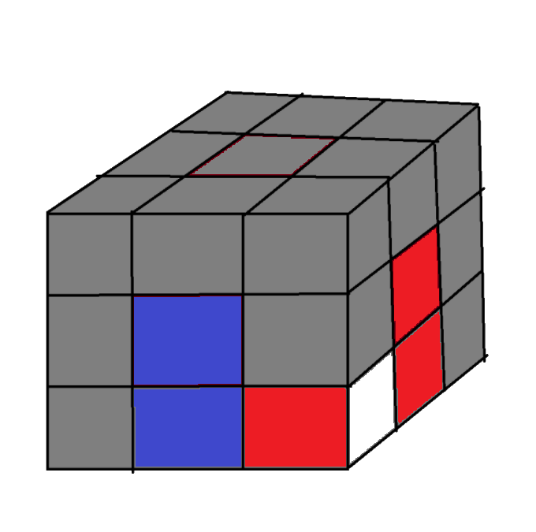

La résolution du Rubik's cube

Cette methode est une version que j'ai simplifiée de la methode layer by layer.
Cette methode se divise en 7 parties distinctes:
Les noms des pieces :

Centres
Les centres sont les pièces qui montrent la couleur de la face sur le rubik's cube fini.
Arêtes
Les arêtes d'un rubik's cube sont des pièces bicolores qui peuvent tourner sur deux axes.
Coins
Les coins d'un rubik's cube sont des pièces tricolores qui peuvent tourner sur trois axes.
Il faut aussi savoir que les centres ne se deplacent pas et par conséquent la face rouge sera toujours opposée à la face orange, la bleue à la verte et la blanche à la jaune.
Les mouvements sont la base des techniques ils sont à apprendre par coeur.
La liste des mouvements ici à été réduite pour vous réduire le nombre à apprendre.

R
Le mouvement R est un mouvement qui fait tourner la face de droite dans le sens horaire

F
Le mouvement F est un mouvement qui fait tourner la face de devant dans le sens horaire

U
Le mouvement U est un mouvement qui fait tourner la face du dessus dans le sens horaire

L
Le mouvement L est un mouvement qui fait tourner la face de gauche dans le sens horaire

B
Le mouvement B est un mouvement qui fait tourner la face de derrière dans le sens horaire

D
Le mouvement D est un mouvement qui fait tourner la face du dessous dans le sens horaire
Les mouvements ont plusieurs dérivés :
On commence par repérer les coins blancs sur la face jaune.
On en prend un et on va regarder les deux autres couleurs sur ce coin.
On tourne la face jaune (U, U') pour placer le coin entre les faces des couleurs repérées précédement.
On doit avoir quelque chose qui ressemble a ceci :
On execute alors la methode appelée ascenceur [R U R' U'] jusqu'à ce que le coin soit bien plcé et orienté.
On itère le process autant de fois qu'il y a de coins blancs sur la face jaune.
Si on a un coin au bon endroit mais avec la mauvaise orientation on réalise la methode ascenceur [R U R' U'].
Comme ceci :

Un autre cas possible est qu'un coin soit placé à la place d'un autre coin.
Nous devons le sortir, encore une fois avec la même methode [R U R' U'].

Le but ici est d'insérer les arêtes à leur position finale.
Deux cas sont possibles :
dans les deux cas vous devez former un T avec l'arête a placer comme ceci :
Je vous propose soit l'histoire du belge un peu dure a comprendre ou la methode en dur
L'histoire du belge et elle sert dans les deux cas.
Le belge est l'arête à placer (Ce belge est pas malin).
Les methodes brutes de base
Si par malheur une arête se trouve a la bonne place mais qu'elle est retournée ou alors que la 2eme couronne n'est pas terminée et qu'il ne reste plus aucune arête a placer sur la face jaune.
Soit pour enlever l'arête retournée soit pour sortir une arête qui n'est pas a sa place.
Nous allons placer une arête jaune a la place d'une arête (mal mise ou à la mauvaise place).
En suivant la même methode de placement d'arrête qu'au dessus.
dans tous les cas la methode est la même. Il faudra juste la réitérer.
La methode est [F R U R' U' F']